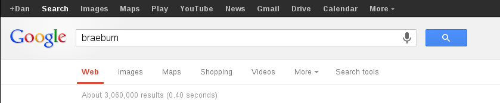
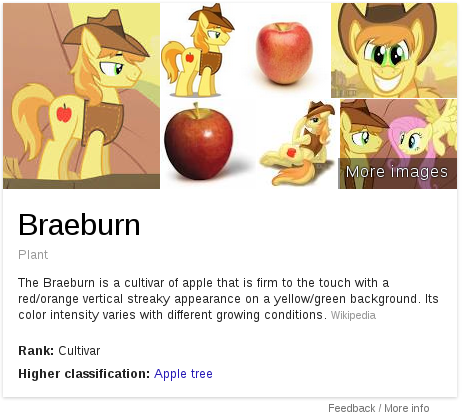

Structuring data on the web with schema.org
GDG DevFest Can-Am 2013
Systems Librarian, Laurentian University
By “web”, I mean HTML documents
<!DOCTYPE html>
<h1>House of Cards</h1>
<p>A political drama produced by Kevin Spacey
and released in 2013 directly to Netflix, starring:</p>
<ul>
<li>Kevin Spacey</li>
<li>Robin Wright</li>
<li>Kate Mara</li>
<li>...</li>
</ul>HTML as presentation
The above code renders in normal browsers roughly as:
House of Cards
A political drama produced by Kevin Spacey and released in 2013 directly to Netflix, starring:
- Kevin Spacey
- Robin Wright
- Kate Mara
- ...
HTML as a linked web of documents
For example:
<!DOCTYPE html>
Kevin Spacey
In this case, pointing off to some other web page, presumably about Kevin Spacey.
But what does it mean?
Better than a bag of words
- Challenge: derive meaning from a (largely) presentation-oriented medium
- Search engines use font size, font weight, above-the-fold content, etc for relevance
- Early attempts to embed metadata via
<meta>tags were quickly gamed: see "spider food" - Early efforts to build a parallel semantic web based on RDF/XML were... complex and largely academic
Semantic fail! (Via Ed Summers)
 Structured data in HTML
If you love OO, and you love HTML, you're going to love structured data!
- Geniuses* figured out how to decorate HTML using attributes to represent types, properties, and relationships
- The semantic web and the document web can be united!
- Search engines can derive direct relationships between the properties and the text that is displayed to actual humans with much more certainty
* Not me. Very much not me.
RDFa Lite: basic concepts
Delineate structured data in HTML using attributes.
RDFa Lite: HTML attributes
vocab: the vocabulary that defines the referenced types and their propertiestypeof: the type of the thing being describedproperty: the property of the described thingresource: an identifier for a given thing on the pageprefix: if you have to mix multiple vocabularies, you can
Scope
The typeof property creates a new scope, which is (normally) limited to the HTML element on which it is defined, and children of that element.
<!DOCTYPE html>
<div typeof="Example">The scope starts here
<p>and continues
<span>through all of the nested
<em>child</em>
</span>
<span>elements</span>
</p>
</div>House of Cards: Plain HTML
<!DOCTYPE html>
<h1>House of Cards</h1>
<p>A political drama produced by Kevin Spacey
and released in 2013 directly to Netflix, starring:</p>
<ul>
<li>Kevin Spacey</li>
<li>Robin Wright</li>
<li>Kate Mara</li>
<li>...</li>
</ul>HTML + RDFa (basic)
<!DOCTYPE html>
<div vocab="http://schema.org/" typeof="TVSeries">
<h1 property="name">House of Cards</h1>
<p>A political drama produced by
<span property="producer">Kevin Spacey</span> and released in
<span property="copyrightYear">2013</span> directly to Netflix,
starring:</p>
<ul>
<li property="actor">Kevin Spacey</li>
<li property="actor">Robin Wright</li>
<li property="actor">Kate Mara</li>
<li>...</li>
</ul>
</div>
A TVSeries and its attributes
HTML + RDFa (nested types)
<!DOCTYPE html>
<div vocab="http://schema.org/" typeof="TVSeries">
<h1 property="name">House of Cards</h1>
<p>A political drama produced by
<span property="producer" typeof="Person">
<span property="name">Kevin Spacey</span>
</span> and released in
<span property="copyrightYear">2013</span>
directly to Netflix, starring:</p>
<ul>
<li property="actor" typeof="Person">
<span property="name">Kevin Spacey</span>
</li>
<li property="actor" typeof="Person">
<span property="name">Robin Wright</span>
</li>
</ul>
</div>
A Person can have attributes other than just name
HTML + RDFa (@resource)
<!DOCTYPE html>
<div vocab="http://schema.org/" typeof="TVSeries"
resource="#house_of_cards">
<h1 property="name">House of Cards</h1>
<p>A political drama produced by
<span property="producer" typeof="Person" resource="#kspacey">
<span property="name">Kevin Spacey</span>
</span> and released in
<span property="copyrightYear">2013</span>
directly to Netflix, starring:</p>
<ul>
<li property="actor" resource="#kspacey">Kevin Spacey</li>
<li property="actor" typeof="Person">
<span property="name">Robin Wright</span>
</li>
</ul>
</div>
Avoiding redundant redundancies!
HTML + RDFa (@prefix)
<!DOCTYPE html>
<div vocab="http://schema.org/" prefix="foaf: http://xmlns.com/foaf/0.1/"
typeof="TVSeries" resource="#house_of_cards">
<h1 property="name">House of Cards</h1>
<p>A political drama produced by
<span property="producer" typeof="Person" resource="#kspacey">
<span property="name foaf:account">
<a href="https://plus.google.com/+KevinSpacey"
typeof="foaf:OnlineAccount">Kevin Spacey</a>
</span>
</span> and released in
<span property="copyrightYear">2013</span>
directly to Netflix, starring:</p>
<ul>
<li property="actor" resource="#kspacey">Kevin Spacey</li>
<li property="actor" typeof="Person">
<span property="name">Robin Wright</span>
</li>
</ul>
</div>
Because the world is described by more than one ontology.
RDFa: extracting structured data

Image generated by http://rdfa.info/play
schema.org for structured data
- There are many different vocabularies
- Mixing vocabularies is the norm…
- But can also be painful for publishers and consumers
- schema.org launched in 2011 as a joint effort between Google, Yahoo, and Yandex
- A single vocabulary for all the things! Well, all the things search engines really cared about
- Ergo, it immediately became the only vocabulary SEO community cared about
- In 2013, schema.org development moved to W3.org for open discussion
Now, publish structured data!
- Your web applications:
- Likely use a database of some kind, with well-defined types and properties
- With a little bit of extra effort, you can map those types and properties to schema.org types and properties
- And Boom!
- You've just enriched the knowledge graph
- And enabled other applications to easily build on your data
- And likely improved your search ranking*
* I am not an SEO consultant and this does not constitute SEO advice
Resources
RDFa
- Overview and tools: http://rdfa.info
- RDFa Lite specification: http://www.w3.org/TR/rdfa-lite/
Schema.org vocabulary
- Specification and intro: http://schema.org
- W3 home: http://www.w3.org/wiki/WebSchemas
- Mailing list: http://lists.w3.org/Archives/Public/public-vocabs/